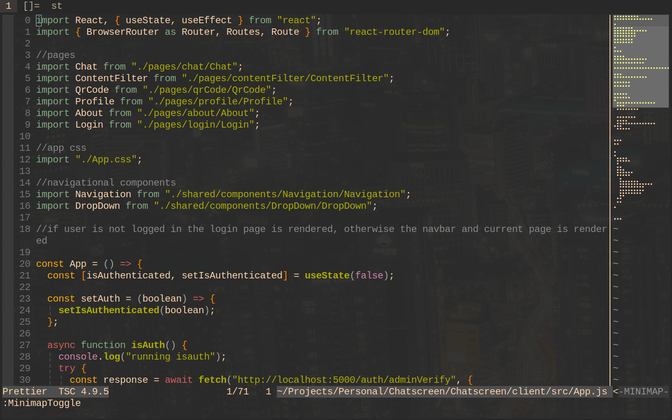

Back
MINI MAP:
Made by wxfr
Watch Video
Open up a file in vim, choose one with a relavite amount of code
Open up Mini Map - do this by pressing 'ENTER' or
'CTRL + m'

Press 'CTRL + l' to move into the map on the right"

'j' and 'k' will move you up and down like in the main window, but much
faster

Press 'CTRL and h' to move back to the main window
Finally, press 'ENTER' to close the Mini Map window
Back